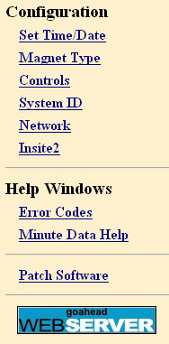
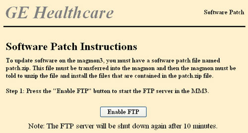
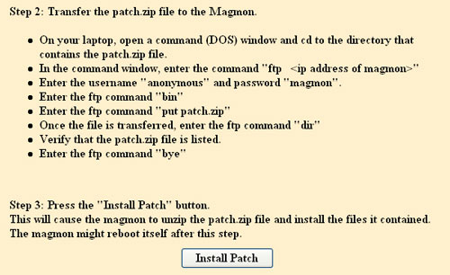

GE Exclusive Use Only
Direction 5440000, Rev# 5
Signa HDxt Service Methods
Module Version 1.0, Version Date 4/16/07
GE Exclusive Use Only |
The Software Patch load utility is available on Magmon3 units running v1.51 or higher software. This utility is proprietary to GE Field Service engineers.
Magmon3 must be operating in Proprietary Mode. Refer to Login Modes.
Laptop configured and connected to the Magmon3-J5 using the crossover network cable (see Direct Network Cable Connection to Laptop and Magmon3 in Module 6.
The software patch file named patch.zip is located on either the laptop's hard drive or is located on CD-ROM disc and accessible on the laptop. Make note of the file location, C:\temp\patch.zip, for example.
At the laptop, log into the Magmon3 with the following case-sensitive information:
Username: MMService
Password: MagnetMonitor
Click Patch Software, located in the lower left corner of the screen (see Illustration 1).
Illustration 1: Software Patch Option

After clicking Patch Software, the instructions for enabling FTP will be displayed on the screen (see Illustration 2).
Illustration 2: Enable FTP

When you have enabled FTP, instructions for transferring and installing patch.zip will be displayed on the screen (see Illustration 3).
Illustration 3: Install Patch

After clicking [Install Patch], the screen will report that the patch is being installed. The Magmon3's display will continue to cycle until it begins to process the patch file. When the patch is processed, the Magmon3 will stop cycling the display, and momentarily display “reboot” before cycling the display again. The reboot action will log off the laptop (the laptop screen will still show the “patch is being installed” screen). While rebooting, the Magmon3 will be unresponsive to the network or the front panel buttons. Watch for the display to go into its normal operation of showing the Date/Time/Software Version/Alarms, and then cycling through Helium Level and Helium Vessel Pressure.
| NOTE: | If the Magmon3 does not reboot three minutes after clicking [Install Patch], click [Log off], momentarily unplug the Magmon3, and reinsert plug to recycle power to the Magmon3 unit. |
When the reboot is complete, check the Magmon3 display and verify the Software Version matches the version number of the patch.
Log into the Magmon3 with the laptop and click View InSite2 Status. Select only the User Options box, and confirm that the patch was applied, and the unit rebooted.
Also click Config Summary and verify all information is complete and correct. Make any necessary changes.
Reconnect the Magmon3 to the network or phone line.
Press Call InSite, and then press Yes to force the unit to upload the new information to the back office.
Wait 10 minutes for the Magmon3 to complete its upload, and then log into the Magmon3 with the laptop and click View InSite2 Log.
Check the log to see if the unit connected successfully and uploaded data to the back office. If the connection did not go through, contact your Regional Online Center engineer for assistance.